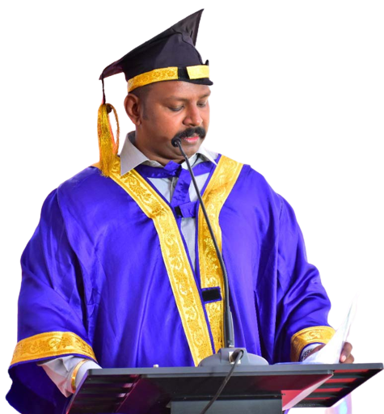
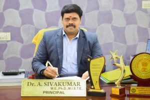

 Christ College of Engineering and Technology, a unit of Sam Paul Educational Trust, was established in the year 2007 with the aim of empowering young aspirants into successful professionals. The Premier Institution was founded by the far-sighted vision of Dr. S. R.S. Paul, a multi-faceted personality. A philanthropist, an Entrepreneur, an Educationist, a Sportsman, and a Lawyer, and his dynamic leadership won widespread appreciation. Dr. A. Siva Kumar is administering this Temple of Technological Education, Principal, a beacon of light who has been directing both the students and staff in the right way toward academic exploration.
Dr. A. Siva Kumar is administering this Temple of Technological Education, Principal, a beacon of light who has been directing both the students and staff in the right way toward academic exploration.
| Name of the student | |
| Name of the Father | |
| Enter your HSC Score | |
| Enter your Age | |
| Enter Your E-Mail | |
| Phone Number | |
| Enter your Gender | |
| Date of Birth | |
| Languages Know | |
| Course | |
Christ College of Engineering and Technology, a unit of Sam Paul Educational Trust, was established in the year 2007 with the aim of empowering young aspirants into successful professionals.The Premier Institution was founded by the far-sighted vision of Dr. S. R.S. Paul, a multi-faceted personality A philanthropist, an Entrepreneur, an Educationist, a Sportsman, and a Lawyer, and his dynamic leadership won widespread appreciation.